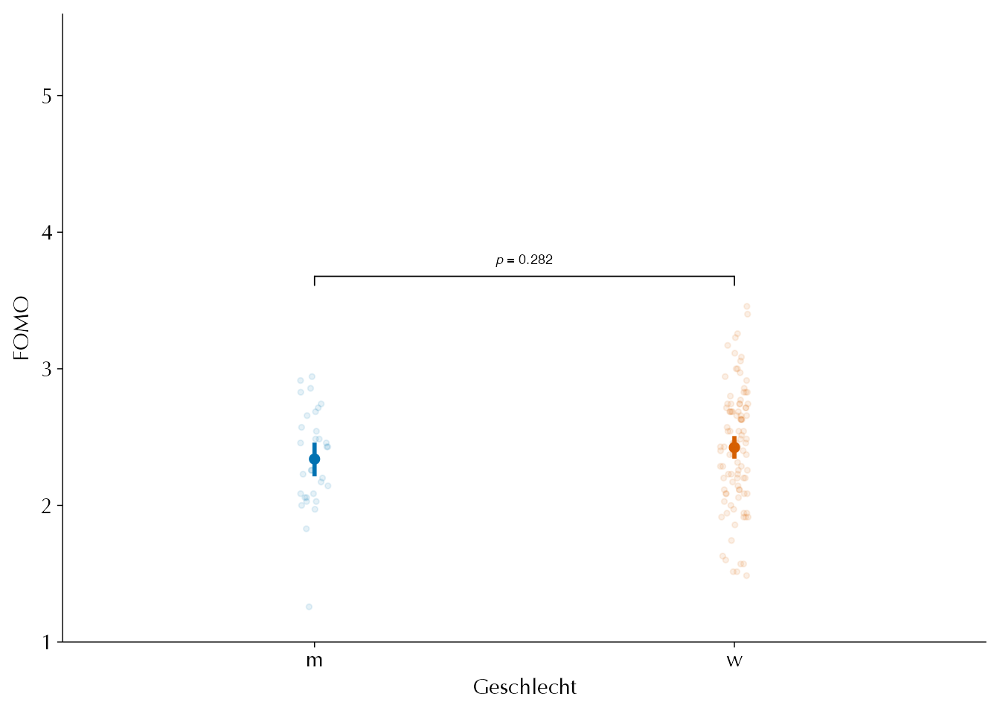

# install.packages("pacman")
pacman::p_load(
readr, # Daten einlesen
dplyr, # Datenmanipulation
rstatix, # Statistische Analysen
tidyplots, # Grafiken
systemfonts, # Grafiken
sjPlot # Tabellen
)EW-BA6
Deskriptive und Inferenzstatistische Analyse
1 Einleitung
Nachdem wir im ersten Skript gelernt haben, wie man einen Beispieldatensatz für die Analyse vorbereitet, beschäftigen wir uns nun mit den Möglichkeiten der statistischen Auswertung. Wir setzen direkt am bisherigen Beispiel an und führen euch Schritt für Schritt durch die wichtigsten Methoden der deskriptiven und inferenzstatistischen Analyse.
2 Daten in R laden
Bevor wir mit der Analyse beginnen, müssen wir alle benötigten Pakete laden. Das pacman-Paket ermöglicht es, mehrere Pakete gleichzeitig zu laden. Falls ihr es noch nicht installiert habt, könnt ihr das mit install.packages("pacman") nachholen.
Wir laden zunächst die vorbereiteten Daten. Achtet darauf, dass der Pfad zur Datei stimmt:
data_proc <- read_csv("data/proc/daten_fomo_processed.csv")
head(data_proc)Da CSV-Dateien keine Informationen über Faktoren speichern, müssen kategoriale Variablen wie „Geschlecht“ oder „Verfügbarkeitserwartung“ erneut als Faktor kodiert werden:
# Geschlecht
data_proc$geschlecht <- factor(data_proc$geschlecht, levels = c("m", "w", "d"))
# Verfuegbarkeitserwartung:
data_proc$verfuegbarkeitserwartung <- factor(data_proc$verfuegbarkeitserwartung, levels = c("niedrig", "mittel", "hoch"))3 Deskriptive Statistik
3.1 Kategorische Variablen
Für die Beschreibung von kategorialen Variablen sind absolute und relative Häufigkeiten zentral. Sie zeigen, wie viele Personen in jeder Gruppe sind und wie groß ihr Anteil an der Gesamtstichprobe ist. In R können wir dafür den freq_table() aus dem Paket rstatix nutzen.
tab_df(freq_table(data_proc, geschlecht), col.header = c("Geschlecht", "N", "Relative Häufigkeit"))| Geschlecht | N | Relative Häufigkeit |
| m | 32 | 23.50 |
| w | 103 | 75.70 |
| d | 1 | 0.70 |
Auch für Kombinationen mehrerer Kategorien (z.B. Geschlecht und Verfügbarkeitserwartung) ist dies möglich.
tab_df(freq_table(data_proc, geschlecht, verfuegbarkeitserwartung), col.header = c("Geschlecht", "Verfügbarkeitserwartung", "N", "Relative Häufigkeit"))| Geschlecht | Verfügbarkeitserwartung | N | Relative Häufigkeit |
| m | niedrig | 12 | 37.50 |
| m | mittel | 12 | 37.50 |
| m | hoch | 8 | 25.00 |
| w | niedrig | 25 | 24.30 |
| w | mittel | 47 | 45.60 |
| w | hoch | 31 | 30.10 |
| d | mittel | 1 | 100.00 |
3.2 Numerische Variablen
Numerische Variablen wie „Alter“ oder „FOMO“ werden mit statistischen Kennwerten wie Mittelwert (Durchschnitt), Standardabweichung (Streuung), Median (Zentralwert) und weiteren beschrieben (s.h. Folien). Diese Kennwerte geben einen schnellen Überblick über die Verteilung der Daten.
In R nutzen wir dafür die get_summary_stats() Funktion.
tab_df(get_summary_stats(select(data_proc, c(alter, fomo)), type = "common"))| variable | n | min | max | median | iqr | mean | sd | se | ci |
| alter | 136 | 18.00 | 39.00 | 21.00 | 2.00 | 21.65 | 3.44 | 0.29 | 0.58 |
| fomo | 136 | 1.26 | 3.46 | 2.43 | 0.59 | 2.41 | 0.42 | 0.04 | 0.07 |
Mit dem Argument type kann festgelegt werden, welche Kennwerte angezeigt werden sollen. Weitere Informationen liefert help(get_summary_stats).
data_proc %>%
select(fomo, verfuegbarkeitserwartung) %>% # relevante Variablen selektieren
group_by(verfuegbarkeitserwartung) %>% # Gruppierung nach kategorieller Variable
get_summary_stats(type = "mean_sd") %>% # Mittelwert und Standardabweichung
select(-variable) %>%
tab_df(col.header = c("Verfügbarkeitserwartung", "N", "M", "SD"), digits = 1) # Rundung auf eine Nachkommastelle| Verfügbarkeitserwartung | N | M | SD |
| niedrig | 37 | 2.3 | 0.4 |
| mittel | 60 | 2.3 | 0.4 |
| hoch | 39 | 2.7 | 0.4 |
4 Inferenzstatistik
Die Inferenzstatistik beschäftigt sich mit der Frage, ob die in einer Stichprobe beobachteten Zusammenhänge oder Unterschiede auch in der Grundgesamtheit (Population) bestehen. Dazu werden Hypothesen formuliert und mit Hilfe von Signifikanztests überprüft. Im Folgenden werden ein paar zentrale inferenzstatistische Verfahren beispielhaft vorgestellt, die auf unterschiedlichen Fragestellungen basieren.
4.1 Korrelationen
Wenn wir untersuchen möchten, ob zwei Variablen systematisch miteinander zusammenhängen, also ob sie gemeinsam kovariieren, nutzen wir die Korrelation als Maß für die Richtung und Stärke des Zusammenhangs. Im vorliegenden Beispiel interessiert uns, ob das Alter mit dem FOMO-Wert negativ zusammenhängt – also ob ältere Personen geringere FOMO-Werte aufweisen.
Hypothesenformulierung:
Wir gehen in diesem Fall also von einem gerichteten Zusammenhang aus:
- Nullhypothese (\(\mathcal{H}_0\)): Es besteht kein negativer Zusammenhang zwischen Alter und FOMO, also \(r \geq 0\).
- Alternativhypothese (\(\mathcal{H}_1\)): Es besteht ein negativer Zusammenhang, also \(r < 0\).
Visuelle Überprüfung
Bevor wir den Zusammenhang statistisch testen, empfiehlt sich eine grafische Exploration der Daten. Ein Streudiagramm zeigt, wie die einzelnen Werte von Alter und FOMO verteilt sind und ob ein Trend sichtbar ist. Zusätzlich wird eine Regressionslinie eingeblendet, die den geschätzten linearen Zusammenhang visualisiert.
tidyplot(data_proc, x = alter, y = fomo) %>%
add_data_points_jitter(jitter_width = 0.6, white_border = TRUE) %>%
add_curve_fit(method = "lm", linewidth = 0.9, alpha = 0.2) %>%
adjust_font(family = "Optima", fontsize = 11) %>%
adjust_y_axis(limits = c(1, 5), breaks = seq(1, 5)) %>%
adjust_x_axis_title("Alter") %>%
adjust_y_axis_title("FOMO") %>%
adjust_size(width = NA, height = NA)
Die Grafik ermöglicht es, erste Hinweise auf die Richtung und Form des Zusammenhangs zu erhalten. Der abfallender Verlauf der Regressionslinie legt einen negativen Zusammenhang nahe.
Statistische Prüfung:
Für die Berechnung des Zusammenhangs verwenden wir den Pearson-Korrelationskoeffizienten, da beide Variablen metrisch sind und ein linearer Zusammenhang angenommen wird. Die gerichtete Hypothese wird durch das Argument alternative = "less" umgesetzt:
r_fomo_alter <- cor_test(
data = data_proc, # Datensatz
vars = c(fomo, alter), # Variablen
method = "pearson", # Pearson-Korrelation
alternative = "less" # Gerichterer Zusammenhang H1: r < 0
)
tab_df(r_fomo_alter)| var1 | var2 | cor | statistic | p | conf.low | conf.high | method |
| fomo | alter | -0.29 | -3.55 | 0.00 | -1 | -0.16 | Pearson |
Interpretation:
- Der Korrelationskoeffizient \(r\) gibt Richtung und Stärke des Zusammenhangs an. Ein negativer Wert bestätigt die Hypothese, dass mit steigendem Alter der FOMO-Wert sinkt
- Der p-Wert zeigt die Wahrscheinlichkeit, unter der Nullhypothese (\(r \geq 0\)) einen mindestens so starken negativen Zusammenhang zu beobachten. Ist der p-Wert kleiner als das Signifikanzniveau (z.B. \(\alpha = .05\)), wird die Nullhypothese verworfen und die gerichtete Alternativhypothese angenommen
Alternative: Spearman-Korrelation:
Wenn die Voraussetzungen für Pearson (Normalverteilung, Linearität) nicht erfüllt sind, kann die Spearman-Rangkorrelation verwendet werden.
cor_test(data_proc, fomo, alter, method = "spearman", alternative = "less") %>%
tab_df()| var1 | var2 | cor | statistic | p | method |
| fomo | alter | -0.22 | 512148.95 | 0.00 | Spearman |
4.2 Mittelwertsvergleiche
Mittelwertsvergleiche dienen dazu, festzustellen, ob sich die durchschnittlichen Werte einer metrischen Variablen (z.B. FOMO) zwischen zwei oder mehr Gruppen signifikant unterscheiden. Die Wahl des statistischen Tests hängt davon ab, wie viele Gruppen miteinander verglichen werden sollen.
4.2.1 t-Test
Der t-Test für unabhängige Stichproben prüft, ob sich die Mittelwerte zweier unabhängiger Gruppen signifikant unterscheiden. In unserem Beispiel interessiert uns, ob Personen unterschiedlichen Geschlechts (männlich vs. weiblich) unterschiedliche FOMO-Werte aufweisen.
Hypothesenformulierung
- Nullhypothese (\(\mathcal{H}_0\)): Die Mittelwerte der beiden Gruppen sind gleich (\(\mu_\text{m} = \mu_\text{w}\)).
- Alternativhypothese (\(\mathcal{H}_1\)): Die Mittelwerte unterscheiden sich (\(\mu_\text{m} \neq \mu_\text{w}\)).
Zur Vorbereitung müssen wir in unserem Fall einen Subdatensatz erstellen, indem nur die beiden Geschlechter männlich und weiblich enthalten sind. Die eine Person, die sich als divers identifiziert, können wir aufgrund der geringen Stichprobengröße nicht in unsere statistische Analyse aufnehmen.
table(data_proc$geschlecht)
m w d
32 103 1 data_ttest <- subset(data_proc, subset = (geschlecht == "m" | geschlecht == "w"))
data_ttest$geschlecht <- droplevels(data_ttest$geschlecht)
levels(data_ttest$geschlecht)[1] "m" "w"Visuelle Exploration
Vor der formalen Testung empfiehlt sich eine grafische Darstellung der Verteilungen und Mittelwerte in beiden Gruppen, um ein Gefühl für die Daten zu bekommen. Hierzu eignet sich beispielsweise ein Dichteplot mit eingezeichneten Mittelwerten und den Rohdatenpunkten. Ein Dichteplot zeigt, wie die Werte einer Variablen innerhalb einer Gruppe verteilt sind, und macht sichtbar, ob die Verteilung beispielsweise symmetrisch, schief oder mehrgipflig ist.
tidyplot(data_ttest, x = geschlecht, y = fomo, color = geschlecht) %>%
add_ci95_errorbar(width = 0.0, linewidth = 1) %>%
add_mean_dot(width = 1) %>%
add_data_points_jitter(alpha = 0.1, jitter_width = 0.1) %>%
remove_legend() |>
adjust_font(family = "Optima", fontsize = 11) %>%
adjust_y_axis(limits = c(1, 5), breaks = seq(1, 5)) %>%
adjust_x_axis_title("Geschlecht") %>%
adjust_y_axis_title("FOMO") %>%
adjust_size(width = NA, height = NA) %>%
#add_test_asterisks(method = "t_test", hide.ns = FALSE, hide_info = TRUE) |>
add_test_pvalue(label = "italic(p) = {format_p_value(p, 0.001)}", hide_info = TRUE)
Diese Darstellung erlaubt es, die Verteilung, Streuung und Lage der Mittelwerte in beiden Gruppen direkt zu vergleichen.
Voraussetzungen des t-Tests
Vor der Durchführung des t-Tests sollten die Voraussetzungen geprüft werden:
- Normalverteilung der abhängigen Variable in beiden Gruppen (z.B. Shapiro-Wilk-Test).
- Varianzhomogenität (Gleichheit der Varianzen, z.B. Levene-Test).
- Unabhängigkeit der Beobachtungen (durch Studiendesign gegeben).
Wir können die Voraussetzungen der Normalverteilungen beispielsweise mit einem Shapiro-Test überprüfen. Wenn der p-Wert nicht statistisch signifikant ist, behalten wir die Nullhypothese, dass die Daten in der Population normalverteilt sind bei.
data_ttest %>%
group_by(geschlecht) %>%
shapiro_test(fomo)Beide p-Werte aus dem Shapiro-Wilk-Test sind in diesem Beispiel nicht statistisch signifikant, das bedeutet, dass wir die Nullhypothese der Normalverteilung beibehalten und davon ausgehen können, dass die Normalverteilungsannahme für die FOMO-Werte in beiden Geschlechtsgruppen nicht verletzt ist.
Die Annahme der Varianzhomogenität (Homoskedastizität) überprüfen wir mit dem Levene-Test. Auch hier gilt: Die Nullhypothese des Tests besagt, dass die Varianzen in den Gruppen gleich sind. Ein nicht signifikanter p-Wert spricht dafür, dass kein Hinweis auf einen Unterschied der Varianzen vorliegt, sodass wir die Homoskedastizitätsannahme als erfüllt ansehen können.
levene_test(data_ttest, fomo ~ geschlecht)Da auch der Levene-Test in diesem Beispiel einen nicht signifikanten p-Wert liefert, gehen wir davon aus, dass die Voraussetzung der Varianzhomogenität nicht verletzt ist. Damit sind die zentralen Voraussetzungen für die Durchführung eines t-Tests für unabhängige Stichproben erfüllt
Statistischer Test
tt_geschl_fomo <- t_test(
data = data_ttest, # Datensatz
formula = fomo ~ geschlecht, # Formel
alternative = "two.sided", # zweiseitiger Test (H0: m1 - m2 = 0)
paired = FALSE, # Test für unabhängige Stichproben
ref.group = "w", # Referenzgruppe: w - m
detailed = TRUE
)
tab_df(tt_geschl_fomo)| estimate | estimate1 | estimate2 | .y. | group1 | group2 | n1 | n2 | statistic | p | df | conf.low | conf.high | method | alternative |
| 0.08 | 2.42 | 2.34 | fomo | w | m | 103 | 32 | 1.09 | 0.28 | 59.96 | -0.07 | 0.24 | T-test | two.sided |
- t-Wert: Teststatistik, die das Verhältnis des Mittelwertsunterschieds zur Streuung beschreibt.
- Freiheitsgrade (df): Anzahl der unabhängigen Informationen.
- p-Wert: Gibt an, wie wahrscheinlich ein mindestens so großer Unterschied unter der Nullhypothese ist.
Wir sehen, dass weibliche Personen im Mittel einen 0.08 Punkte größere FOMO Wert auweisen als männliche Personen. Der dazugehörige t-Wert von t(59)=1.09 ist mit einem p-Wert von p = 0.282 mit einem \(\alpha\)-Niveaus von 5% statistisch nicht bedeutsam. Wir können also die Nullhypothese, dass der FOMO Mittelwert von männlichen und weiblichen Perosnen sich unterscheiden, nicht verwerfen.
Wichtig ist jedoch zu betonen, dass ein nicht signifikanter p-Wert nicht automatisch bedeutet, dass die Mittelwerte in der Population tatsächlich gleich sind. Die Schlussfolgerung, dass Gleichheit besteht, ist statistisch nicht zulässig, da ein Hypothesentest bei nicht signifikantem Ergebnis lediglich anzeigt, dass die Daten keinen ausreichenden Beleg für einen Unterschied liefern – er kann jedoch nicht bestätigen, dass tatsächlich kein Unterschied existiert.
Effektstärke: Cohen’s d
Die Effektstärke gibt die praktische Relevanz des Unterschieds an. Cohen’s d ist ein standardisiertes Maß für den Mittelwertsunterschied:
cohens_d(data_ttest, fomo ~ geschlecht) %>% tab_df()| .y. | group1 | group2 | effsize | n1 | n2 | magnitude |
| fomo | m | w | -0.21 | 32 | 103 | small |
- \(d = 0.2\) – kleiner Effekt
- \(d = 0.5\) – mittlerer Effekt
- \(d = 0.8\) – großer Effekt
Eine Effektstärke von d = -0.21 bedeutet, dass sich die beiden Gruppen im Mittel um -0.21 Standardabweichungen unterscheiden. Es ist hier also maximal von einem kleinem Effekt auszugehen.
4.2.2 ANOVA
Wenn mehr als zwei Gruppen verglichen werden sollen, verwendet man die Varianzanalyse (ANOVA). Sie prüft, ob sich mindestens ein Gruppenmittelwert signifikant von den anderen unterscheidet.
Hypothesenformulierung
- Nullhypothese (\(\mathcal{H}_0\)): Alle Gruppenmittelwerte sind gleich (\(\mu_1 = \mu_2 = \mu_3\)).
- Alternativhypothese (\(\mathcal{H}_1\)): Mindestens ein Gruppenmittelwert unterscheidet sich.
Visuelle Exploration
Auch hier empfiehlt sich eine grafische Darstellung der Verteilung der FOMO-Werte in den verschiedenen Gruppen (z.B. nach Verfügbarkeitserwartung):
tidyplot(
data = data_proc,
x = verfuegbarkeitserwartung,
y = fomo,
color = verfuegbarkeitserwartung
) %>%
add_boxplot(box_width = 0.2, whiskers_width = 0) %>%
add_test_pvalue(
method = "tukey_hsd",
p.adjust.method = "fdr",
label = "italic(p) = {format_p_value(p.adj, 0.001)}",
hide_info = TRUE
) %>%
remove_legend() |>
adjust_font(family = "Optima", fontsize = 11) %>%
adjust_y_axis(limits = c(1, 5), breaks = seq(1, 5)) %>%
adjust_x_axis_title("Verfügbarkeitserwartung") %>%
adjust_y_axis_title("FOMO") %>%
adjust_size(width = NA, height = NA) %>%
adjust_colors(colors_discrete_metro)
Diese Grafik zeigt die Verteilung, Streuung und Mittelwerte der FOMO-Werte in allen drei Gruppen.
Voraussetzungen der ANOVA
- Normalverteilung der abhängigen Variable in allen Gruppen.
- Varianzhomogenität (Gleichheit der Fehlervarianzen).
- Unabhängigkeit der Beobachtungen.
Statistischer Test
aov_test <- anova_test(data_proc, fomo ~ verfuegbarkeitserwartung, detailed = TRUE, effect.size = c("ges", "pes"))
print(aov_test)ANOVA Table (type II tests)
Effect SSn SSd DFn DFd F p p<.05 pes
1 verfuegbarkeitserwartung 4.087 19.607 2 133 13.862 3.4e-06 * 0.172- F-Wert: Verhältnis der Varianz zwischen den Gruppen zur Varianz innerhalb der Gruppen.
- Freiheitsgrade (df): Anzahl der Gruppen minus eins (zwischen), Gesamtstichprobe minus Gruppenanzahl (innerhalb).
- p-Wert: Gibt an, wie wahrscheinlich ein mindestens so großer Unterschied unter der Nullhypothese ist.
Die ANOVA ergibt einen F-Wert von 13,86 bei 2 und 133 Freiheitsgraden. Der zugehörige p-Wert beträgt 3,4 × 10⁻⁶ und liegt damit deutlich unter dem üblichen Signifikanzniveau von 5 %. Das bedeutet, dass wir die Nullhypothese der Gleichheit der Mittelwerte ablehnen können. Es gibt also einen statistisch bedeutsamen Unterschied im durchschnittlichen FOMO-Wert zwischen mindestens zwei Stufen der Verfügbarkeitserwartung. Die partielle Eta-Quadrat (\(\eta^2_\mathrm{ges}\)) von 0,172 weist zudem auf einen mittleren Effekt hin, das heißt, ein relevanter Anteil der Gesamtvarianz der FOMO-Skala wird durch die Verfügbarkeitserwartung erklärt.
Post-hoc-Kontraste (Tukey-Test)
Da die ANOVA nur zeigt, dass irgendwo ein Unterschied zwischen den Gruppen besteht, führen wir zur genaueren Bestimmung der Unterschiede Post-hoc-Tests durch. Der Tukey-Test vergleicht alle möglichen Gruppenpaare miteinander und kontrolliert das Fehlerniveau für multiples Testen.
tab_df(tukey_hsd(data_proc, fomo ~ verfuegbarkeitserwartung))| term | group1 | group2 | null.value | estimate | conf.low | conf.high | p.adj | p.adj.signif |
| verfuegbarkeitserwartung | niedrig | mittel | 0 | 0.03 | -0.16 | 0.22 | 0.94 | ns |
| verfuegbarkeitserwartung | niedrig | hoch | 0 | 0.40 | 0.19 | 0.61 | 0.00 | **** |
| verfuegbarkeitserwartung | mittel | hoch | 0 | 0.37 | 0.18 | 0.56 | 0.00 | **** |
Die Ergebnisse zeigen:
- Zwischen den Gruppen „niedrig“ und „mittel“ besteht kein signifikanter Unterschied im FOMO-Mittelwert (p = 0.94).
- Zwischen „niedrig“ und „hoch“ sowie zwischen „mittel“ und „hoch“ bestehen jeweils signifikante Unterschiede (p < .001). In beiden Fällen ist der FOMO-Wert bei Personen mit hoher Verfügbarkeitserwartung im Mittel um etwa 14 Punkte höher als in den anderen Gruppen.
5 Verwendete R-Pakete
sessioninfo::session_info(pkgs = "attached")─ Session info ───────────────────────────────────────────────────────────────
setting value
version R version 4.5.2 (2025-10-31)
os macOS Tahoe 26.1
system aarch64, darwin20
ui X11
language (EN)
collate de_DE.UTF-8
ctype de_DE.UTF-8
tz Europe/Berlin
date 2025-12-08
pandoc 3.1.12.3 @ /opt/homebrew/bin/ (via rmarkdown)
quarto 1.7.32 @ /Applications/quarto/bin/quarto
─ Packages ───────────────────────────────────────────────────────────────────
package * version date (UTC) lib source
dplyr * 1.1.4 2023-11-17 [1] CRAN (R 4.5.0)
ggplot2 * 4.0.1 2025-11-14 [1] CRAN (R 4.5.2)
readr * 2.1.6 2025-11-14 [1] CRAN (R 4.5.2)
rstatix * 0.7.3 2025-10-18 [1] CRAN (R 4.5.0)
sjPlot * 2.9.0 2025-07-10 [1] CRAN (R 4.5.0)
sysfonts * 0.8.9 2024-03-02 [1] CRAN (R 4.5.0)
systemfonts * 1.3.1 2025-10-01 [1] CRAN (R 4.5.0)
tidyplots * 0.3.1 2025-07-02 [1] CRAN (R 4.5.0)
[1] /Users/luca/Library/R/arm64/4.5/library
[2] /Library/Frameworks/R.framework/Versions/4.5-arm64/Resources/library
* ── Packages attached to the search path.
──────────────────────────────────────────────────────────────────────────────